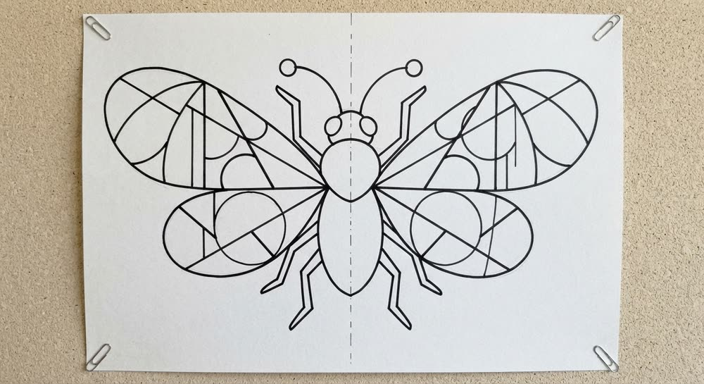
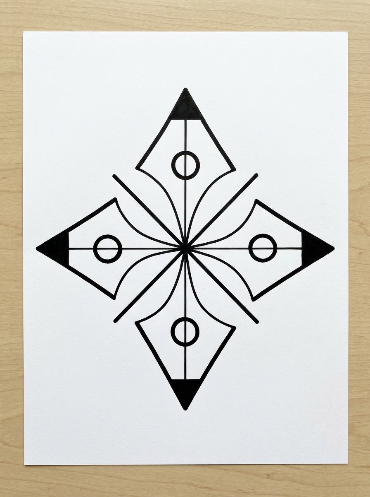
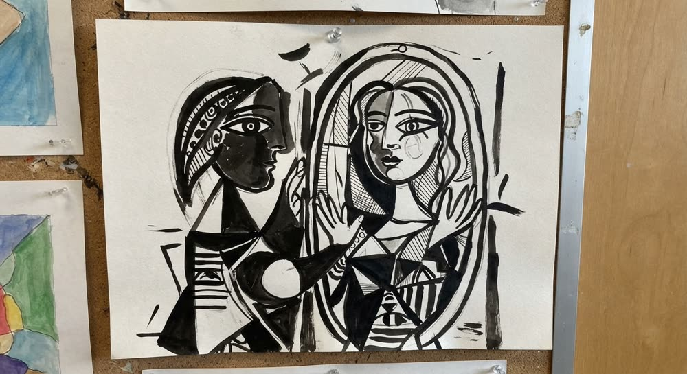
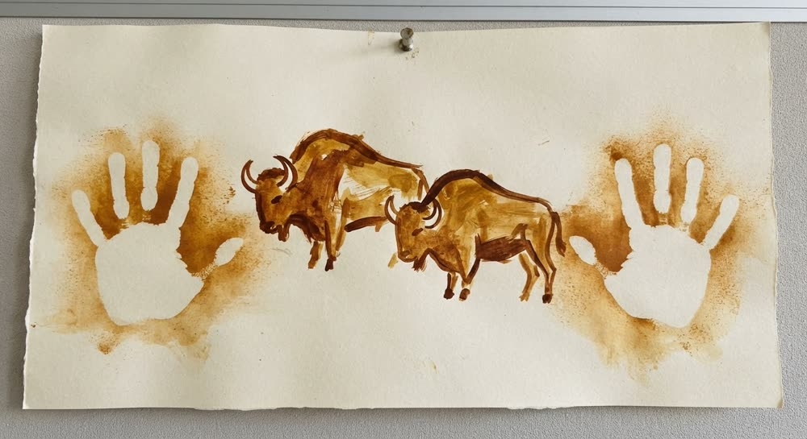

Mirar, dibujar y crear
Simetría, fondo y figura, perspectiva y color: un trimestre de trabajos prácticos para aprender a componer una obra.
Bienvenidos a Arte
En este primer trimestre vamos a mirar, dibujar y crear: aprender cómo se equilibra una composición con la simetría, cómo una figura se destaca sobre un fondo, cómo se representa la profundidad con la perspectiva y qué sensaciones transmiten los colores. Cada semana tiene un trabajo práctico.
Cómo trabajamos
- Todos los trabajos prácticos se hacen en hoja blanca tamaño oficio.
- Se trazan primero suave, con lápiz, y se terminan pasando tinta negra por las líneas definitivas (salvo los trabajos de color, que se pintan con témperas).
- Cada semana tiene la teoría para leer (y copiar en la carpeta), la consigna del trabajo práctico, los pasos para hacerlo y, a veces, un ejemplo de referencia. Los ejemplos sirven para entender la consigna: no hay que copiarlos.
- Las palabras «que ocupe gran parte de la hoja» están en casi todas las consignas: los trabajos tienen que aprovechar el espacio.
Mapa del trimestre
| Semana | Unidad | Trabajo |
|---|---|---|
| 1 | Simetría, fondo y figura, color | Simetría bilateral o axial |
| 2 | Simetría, fondo y figura, color | Simetría central o radial |
| 3 | Simetría, fondo y figura, color | Fondo y figura |
| 4 | Simetría, fondo y figura, color | Monocromatismo y arte paleolítico |
| 5 | Perspectiva geométrica | Perspectiva central: el trazado |
| 6 | Perspectiva geométrica | Perspectiva central: muebles y tinta |
| 7 | Perspectiva geométrica | Perspectiva angular: el trazado |
| 8 | Perspectiva geométrica | Perspectiva angular: prismas y tinta |
| 9 | Teoría del color | La temperatura del color |
| 10 | Teoría del color | El color en obras de arte |
| 11 | Teoría del color | Composición cromática mixta |
| 12 | Teoría del color | Boceto en perspectiva central |
Notas bibliográficas
- Planificación del trimestre · Las consignas, la teoría y los ejemplos de esta plataforma son los del PDF del primer trimestre, que se puede descargar abajo.
- Apunte de teoría · Incluye un apartado de volumetrías y perspectiva, y el Cuadernillo de Educación Plástica de la Prof. Liliana González Ríos (recopilación teórica, 2013): punto, línea, plano, forma, textura, color, composición e historia del arte. En cada semana se indica qué páginas leer.
📥 Descargar la bibliografía
Acá están la planificación del trimestre y el apunte de teoría.
Unidad 1 · Simetría, fondo y figura y monocromía
El equilibrio en la composición: las simetrías, la relación entre la figura y el fondo, y la armonía de un solo color. Una actividad por semana, siempre en hoja blanca tamaño oficio. Ver la unidad en el PDF del trimestre (págs. 1 a 4).
Semana 1 · Simetría bilateral o axial
| Contenido | Simetría bilateral o axial |
| Trabajo práctico | Figura especular con un eje central definido |
| Materiales | Hoja blanca oficio, regla, compás, lápiz y tinta negra. |
📖 Para leer
Un factor importante en una composición plástica es el equilibrio, o sea la compensación de los distintos elementos para llegar, por medio del movimiento perceptivo, a una situación de reposo, de armonía.
Uno de los recursos que podemos utilizar para lograr dicho equilibrio es la simetría: la «reflexión especular» (como si los elementos se vieran reflejados en un espejo) de los componentes con respecto a uno o dos ejes, o a un punto central, que puede ser visible o no.
Asimetría significa lo opuesto, lo no simétrico, aunque si la variación con respecto al eje no es grande puede considerarse como «simetría aproximada», siempre que presente la suficiente similitud entre las partes como para que el eje o el centro se sientan positivamente.
Simetría bilateral o axial: es la más simple. Consiste en la reflexión especular de elementos con respecto a un eje central, visible o no, que puede ser vertical u horizontal, o pueden cortarse ambos en ángulo recto.
📚 En el apunte de teoría: Simetría y asimetría (pág. 30).
✏️ Trabajo práctico
Soporte: Hoja blanca oficio · Técnica: Lápiz y tinta negra
Consigna: realizar una ejercitación de simetría bilateral —que ocupe gran parte de la hoja— con un eje simétrico definido y que la composición contenga rectas, curvas, círculos, arcos y diagonales (todos conformando una figura). Luego finalizar la obra pasándole tinta negra en las líneas.
🖼️ Ejemplo de referencia

Semana 2 · Simetría central o radial
| Contenido | Simetría central o radial |
| Trabajo práctico | Figura simple de 4 direcciones iguales desde un punto central |
| Materiales | Hoja blanca oficio, regla, compás, lápiz y tinta negra. |
📖 Para leer
Simetría central o radial: es la más dinámica. Consiste en elementos colocados por rotación alrededor de un punto central, equidistantes (a igual distancia) entre sí y de dicho centro. Con solamente dos elementos se puede lograr una organización simétrica central; en este caso se la llama también simetría por oposición, ya que la imagen ha hecho un giro de 180° hasta quedar exactamente en forma opuesta sobre el eje de rotación.
Repasá lo que es la simetría en la semana 1.
📚 En el apunte de teoría: Simetría (pág. 30).
✏️ Trabajo práctico
Soporte: Hoja blanca oficio · Técnica: Lápiz y tinta negra
Consigna: realizar una ejercitación de simetría radial —que ocupe gran parte de la hoja— partiendo de un punto central y trazando una figura simple de 4 direcciones iguales (sin necesidad de hacer un mandala complejo) que contenga rectas, curvas, círculos, arcos y diagonales. Luego finalizar la obra pasándole tinta negra en las líneas.
🖼️ Ejemplo de referencia

Semana 3 · Fondo y figura
| Contenido | Fondo y figura |
| Trabajo práctico | Figura humana no realista inspirada en Mujer en el espejo, de Pablo Picasso |
| Materiales | Hoja blanca oficio, lápiz y tinta negra. |
📖 Para leer
Si la línea se cierra sobre sí misma, actúa como perímetro (del griego peri = alrededor, y metros = medida: contorno de una figura) y se transforma en el contorno de una figura. La porción encerrada dentro de la línea es físicamente igual al resto del plano, pero desde el punto de vista psicológico resulta totalmente diferente.
Mientras el área encerrada actúa como figura o forma, el resto del plano se convierte en fondo y parece continuar por debajo de ella. Se podría afirmar que todo objeto sensible existe contra un fondo; la figura tiene calidad de cosa, y el fondo, de sustancia; los límites nunca son comunes a ambos campos, sino que siempre se los percibe como pertenecientes a la figura.
📚 En el apunte de teoría: Relación figura-fondo (pág. 28).
✏️ Trabajo práctico
Soporte: Hoja blanca oficio · Técnica: Tinta negra sobre fondo blanco
Consigna: realizar una ejercitación de fondo y figura —que ocupe gran parte de la hoja— con tinta negra, en donde la composición figurativa sobre fondo blanco exprese una obra de Pablo Picasso: figura humana no realista, inspirada en Mujer en el espejo.
🖼️ Ejemplo de referencia

Semana 4 · Monocromatismo y arte paleolítico
| Contenido | Monocromatismo y arte del Paleolítico |
| Trabajo práctico | Pintura monocromática con la temática y la técnica del Paleolítico Superior |
| Materiales | Hoja blanca oficio, témperas (un color base, blanco y negro) y pinceles. |
📖 Para leer
Monocromía viene del griego: monos = único y croma = color. En la pintura, el color es un elemento de fundamental importancia. Los colores surgen a partir de las ondas luminosas, que componen la luz incolora: al encontrarse con un cuerpo, las células de la retina del ojo humano pueden percibir alrededor de cien matices de luminosidad y varios miles de diferencias de colores.
Los colores con los que pintamos no son haces de luz, sino pigmentos: sustancias de colores que pueden mezclarse para producir diferentes composiciones cromáticas. Para que una composición resulte monocromática se usan todas las relaciones que pueden obtenerse con un solo color, con mezclas que alteren su valor y saturación (blanco, negro y grises): el resultado es una armonía monocromática, donde un color único actúa como armonizador.
Es el trabajo más indicado para iniciarse en las mezclas en la paleta, porque el único cuidado es la gradación de valores del color elegido.
📚 En el apunte de teoría: Paletas: acromática, monocromática y policromática (pág. 26) · Prehistoria (pág. 33).
✏️ Trabajo práctico
Soporte: Hoja blanca oficio · Técnica: Pintura monocromática (un color, más blanco y negro)
Consigna: realizar un dibujo y pintura usando la temática y la técnica del hombre del Paleolítico Superior (pintura lineal, formas planas y motivos como animales o manos), aplicando una armonía monocromática: elegir un único color y mezclar sus gradaciones de valor utilizando blanco y negro.
🖼️ Ejemplo de referencia

Unidad 2 · Iniciación a la perspectiva geométrica
El primer acercamiento al dibujo técnico y espacial: cómo representar la profundidad en una hoja plana. Dos trabajos prácticos de dos semanas cada uno. Se trazan primero con lápiz suave y se finalizan pasando tinta negra sobre las líneas definitivas. Ver la unidad en el PDF del trimestre (págs. 5 a 7).
Semana 5 · Perspectiva central: el trazado
| Trabajo práctico | TP N.º 1: Perspectiva central (semanas 5 y 6) |
| Temática | El cuarto o dormitorio |
| Materiales | Hoja blanca oficio, regla, lápiz HB/2B, goma, microfibra o lapicera de tinta negra. |
📖 Para leer
Cuatro conceptos clave antes de empezar:
- Perspectiva: es un método de dibujo que permite representar objetos y espacios tridimensionales (con alto, ancho y profundidad) sobre una superficie plana como la hoja.
- Línea de horizonte (LH): es una línea horizontal imaginaria que representa la altura de los ojos de quien mira. Todo lo que está por encima de la LH se ve desde abajo; todo lo que está por debajo se ve desde arriba.
- Punto de fuga (PF): es un punto ubicado sobre la línea de horizonte donde parecen juntarse todas las líneas paralelas que se alejan hacia el fondo (como las vías de un tren).
- Líneas auxiliares y líneas definitivas: las líneas que van hacia los puntos de fuga son líneas de construcción y deben hacerse muy suaves con lápiz. Al pasar a tinta negra, solo se remarcan las aristas visibles.
Perspectiva central: se utiliza un único punto de fuga sobre la LH. Las líneas de ancho quedan horizontales, las de altura quedan verticales y todas las líneas de profundidad fugan hacia ese único PF.
📚 En el apunte de teoría: Volumetrías y perspectiva central (pág. 1).
✏️ Trabajo práctico · esta semana
Consigna: realizar una ejercitación de perspectiva central —que ocupe gran parte de la hoja— con método, en lápiz y cuya temática sea el cuarto o dormitorio. Luego finalizar la obra pasándole tinta negra en las líneas de lápiz.
Esta semana: hacé primero un ensayo rápido en una hoja borrador para entender el recorrido de las líneas de fuga, y después empezá el trazado en la hoja oficio:
- Horizonte y fuga: con la hoja oficio en posición horizontal, trazar suave la LH a mitad de altura y marcar el PF cerca del centro.
- Pared del fondo: dibujar un rectángulo mediano alrededor del PF (con dos líneas horizontales y dos verticales).
- Techo, piso y paredes laterales: unir las cuatro esquinas del rectángulo del fondo con el PF y prolongar esas líneas hasta los bordes de la hoja.
Semana 6 · Perspectiva central: muebles y tinta
| Trabajo práctico | TP N.º 1: Perspectiva central (semanas 5 y 6) |
| Temática | El cuarto o dormitorio |
| Materiales | Hoja blanca oficio, regla, lápiz HB/2B, goma, microfibra o lapicera de tinta negra. |
✏️ Trabajo práctico · esta semana
Continuamos el dormitorio de la semana 5 (repasá ahí la teoría):
- Muebles simples: sobre el piso y hacia un costado, trazar la base y la altura de una cama usando líneas horizontales, verticales y fugadas al PF. En la pared opuesta, dibujar una ventana o un cuadro siguiendo las mismas líneas hacia el PF.
- Terminación en tinta: verificar que ocupe gran parte de la hoja y repasar con tinta negra solo los contornos definitivos de la habitación y los muebles.
Para revisar: ¿las líneas de ancho son horizontales y las de altura verticales? ¿Todas las de profundidad van al mismo punto de fuga? ¿Quedaron suaves las líneas auxiliares?
Semana 7 · Perspectiva angular: el trazado
| Trabajo práctico | TP N.º 2: Perspectiva angular (semanas 7 y 8) |
| Temática | Seis cuerpos poliedros (prismas) |
| Materiales | Hoja blanca oficio, regla, lápiz HB/2B, goma, microfibra o lapicera de tinta negra. |
📖 Para leer
Perspectiva angular: el observador mira los cuerpos desde una esquina. Se utilizan dos puntos de fuga (PF1 y PF2) bien separados sobre la LH. Las alturas se trazan siempre con líneas verticales, mientras que los dos lados de cada cuerpo fugan uno hacia PF1 y el otro hacia PF2.
Repasá los conceptos de línea de horizonte y punto de fuga en la semana 5.
📚 En el apunte de teoría: Volumetrías y perspectiva (pág. 1).
✏️ Trabajo práctico · esta semana
Consigna: realizar una ejercitación de perspectiva angular —que ocupe gran parte de la hoja— con método, en lápiz y cuya temática sean cuerpos poliedros (prismas): tres diferentes por encima de la LH y otros tres por debajo de ella. Luego finalizar la obra pasándole tinta negra en las líneas de lápiz.
Esta semana: ensayo rápido en hoja borrador y, en la hoja oficio:
- LH y dos puntos de fuga: trazar la LH horizontal en el centro de la hoja. Ubicar PF1 cerca del borde izquierdo y PF2 cerca del borde derecho.
- Tres prismas por encima de la LH: distribuir tres líneas verticales de distinta altura por arriba de la LH. Unir sus extremos con PF1 y PF2, y cerrar los costados con dos verticales más. Como están arriba de la LH, se verá la cara inferior (base) de cada prisma.
Semana 8 · Perspectiva angular: prismas y tinta
| Trabajo práctico | TP N.º 2: Perspectiva angular (semanas 7 y 8) |
| Temática | Seis cuerpos poliedros (prismas) |
| Materiales | Hoja blanca oficio, regla, lápiz HB/2B, goma, microfibra o lapicera de tinta negra. |
✏️ Trabajo práctico · esta semana
Continuamos los prismas de la semana 7:
- Tres prismas por debajo de la LH: repetir el procedimiento en la mitad inferior de la hoja variando anchos y alturas (por ejemplo: uno alto y delgado, uno ancho y bajo, y uno mediano). Al estar debajo de la LH, se verá la cara superior (tapa) de cada cuerpo.
- Terminación en tinta: pasar tinta negra únicamente a las aristas visibles de los seis prismas, dejando limpias las caras principales.
Para revisar: ¿cada lado de los prismas fuga hacia el punto que le corresponde? ¿Los de arriba muestran la base y los de abajo la tapa? ¿Son seis prismas distintos?
Unidad 3 · Teoría del color: colores fríos y cálidos
La temperatura del color, su uso en obras de arte, una composición mixta y un boceto en perspectiva. Dos clases por semana, de 60 a 75 minutos. Materiales: hojas blancas oficio, témperas, pinceles, lápiz, goma, regla y tinta negra. Usar témperas, no acuarela, y no aplicar agua al material pigmentario. Ver la unidad en el PDF del trimestre (págs. 8 a 14).
Semana 9 · La temperatura del color
| Objetivo | Comprender qué sensaciones transmiten los colores cálidos y los fríos, y reconocerlos en imágenes y objetos. |
| Trabajos | Ejercicio 1 (clase 1) y ejercicio 2 (clase 2) |
📖 Teoría para leer y copiar
La temperatura del color es una reacción subjetiva que percibimos visualmente. Los colores pueden producir sensaciones relacionadas con el calor o con el frío.
Colores cálidos: se relacionan con el rojo, el naranja y el amarillo. Expresan alegría, actividad, movimiento, calor, diversión y acción. También pueden transmitir energía, expansión e iniciativa. Parecen acercarse y expandirse.
Colores fríos: se relacionan con el azul, el verde y el violeta. Producen sensaciones de serenidad, recogimiento, pasividad y frío. También pueden evocar lejanía y amplitud.
Estas asociaciones se relacionan con fenómenos naturales —por ejemplo, rojo con fuego y azul con agua o hielo— y con reacciones emocionales. En general, los cálidos tienen mayor poder de atracción visual que los fríos.
📚 En el apunte de teoría: Temperatura del color (pág. 27) · Círculo cromático (pág. 24).
✏️ Trabajos de la semana
Clase 1 · Ejercicio 1: clasificar colores
Consigna: dividir una hoja en dos partes. Titular una «Colores cálidos» y la otra «Colores fríos». Dibujar cinco elementos en cada lado y pintarlos con la familia de colores correspondiente.
- Trazar una línea vertical.
- Escribir los títulos.
- Elegir cinco elementos para cada lado.
- Dibujarlos con lápiz.
- Pintarlos con témperas.
Ejemplo: en cálidos, un sol, una fogata, una naranja, una flor roja y hojas de otoño; en fríos, un cubo de hielo, el mar, una luna, montañas y un lago. Se pueden elegir otros objetos que representen esas sensaciones.
Clase 2 · Ejercicio 2: una imagen, dos temperaturas
Consigna: dibujar un paisaje sencillo y dividirlo en dos partes. Pintar una mitad con colores cálidos y la otra con colores fríos.
- Dibujar una casa, árboles, montañas y cielo.
- Dividir la hoja en dos zonas.
- Pintar una zona con rojos, naranjas y amarillos.
- Pintar la otra con azules, verdes y violetas.
- Comparar qué sensación transmite cada mitad.
Ejemplo: el mismo paisaje puede parecer un atardecer activo y caluroso en la mitad cálida, y un lugar tranquilo y fresco en la mitad fría.
❓ Para comprobar
- ¿Qué es la temperatura del color?
- ¿Qué colores consideramos cálidos?
- ¿Qué sensaciones producen los fríos?
- ¿Por qué los cálidos suelen atraer más la mirada?
Semana 10 · El color en obras de arte
| Objetivo | Aplicar una familia de colores en la reproducción o ejercitación de una obra, observando sus formas y su composición. |
| Trabajos | Ejercicio 3: Frida Kahlo (cálidos) · Ejercicio 4: Antonio Berni (fríos) |
✏️ Trabajos de la semana
Clase 1 · Ejercicio 3: colores cálidos en un autorretrato
Artista: Frida Kahlo. Obra: Autorretrato.
Consigna: realizar una ejercitación aplicando los colores cálidos, que ocupe gran parte de la hoja, en la obra pictórica de la pintora Frida Kahlo Autorretrato.
- Observar la obra y reconocer el rostro, el cabello, la ropa y el fondo.
- Realizar un dibujo de la composición.
- Elegir rojos, naranjas y amarillos.
- Aplicarlos en distintas zonas de la imagen.
- Procurar que la pintura ocupe gran parte de la hoja.
Ejemplo: reproducir de manera sencilla el rostro y los elementos principales; usar naranja y amarillo en el fondo, rojo en algunas zonas de la ropa o los detalles. Lo importante es que predominen los cálidos.
Clase 2 · Ejercicio 4: colores fríos en «Manifestación»
Artista: Antonio Berni. Obra: Manifestación.
Consigna: realizar una ejercitación aplicando los colores fríos, que ocupe gran parte de la hoja, en la obra pictórica del pintor Antonio Berni Manifestación.
- Observar la obra y reconocer las figuras, los rostros y el fondo.
- Realizar un dibujo de la composición.
- Seleccionar azules, verdes y violetas.
- Aplicarlos en la composición.
- Cubrir gran parte de la hoja con esos colores.
Ejemplo: representar de manera simplificada varios rostros y figuras juntos; pintar algunas zonas con azul, otras con violeta y el fondo con verdes y azules. La condición principal es que predominen los fríos.
Para ver las obras, buscalas en internet: Frida Kahlo, Autorretrato · Antonio Berni, Manifestación.
❓ Para comprobar
- ¿Qué artista corresponde a la actividad de colores cálidos?
- ¿Qué obra se trabaja con colores fríos?
- ¿Qué familia de colores debe predominar en cada trabajo?
Semana 11 · Composición cromática mixta
| Objetivo | Organizar una composición combinando colores cálidos y fríos según la ubicación indicada en la consigna. |
| Trabajo | Ejercicio 5: composición basada en Estructura en gris y rojo, de Gunther Gerzso (clases 1 y 2) |
📖 Teoría para leer y copiar
Una composición cromática mixta combina colores cálidos y fríos dentro de una misma imagen. Un color cálido puede parecer más cercano, pesado y atrayente cuando se coloca junto a uno frío. A su vez, el color frío refuerza características opuestas, como la sensación de lejanía o serenidad.
✏️ Trabajo de la semana
Artista: Gunther Gerzso. Obra: Estructura en gris y rojo.
Consigna: realizar una composición pictórica cromática mixta (cálidos + fríos). En los triángulos superior e inferior se pintará con colores cálidos, y en los triángulos laterales, con colores fríos.
- En una hoja blanca oficio, dibujar un rectángulo.
- Trazar las dos diagonales de esquina a esquina para formar cuatro triángulos.
- Pintar el triángulo superior con cálidos.
- Pintar el inferior también con cálidos.
- Pintar los dos laterales con fríos.
- Revisar que cada zona respete la consigna.
Ejemplo: triángulo superior, amarillo y naranja; inferior, rojo y amarillo; izquierdo, azul y violeta; derecho, verde y azul. Son combinaciones posibles, no colores obligatorios.
❓ Para comprobar
- ¿Qué significa composición cromática mixta?
- ¿Qué zonas llevan colores cálidos?
- ¿Qué zonas llevan colores fríos?
- ¿Qué efecto puede producir la cercanía entre un color cálido y uno frío?
Semana 12 · Boceto en perspectiva central
| Objetivo | Realizar un boceto de un ambiente interior y representar objetos a distintas profundidades mediante perspectiva central básica. |
| Trabajo | Ejercicio 6: boceto de un ambiente interior, a mano alzada y en tinta negra |
📖 Teoría para leer y copiar
La perspectiva central es un recurso de representación que permite sugerir profundidad en una superficie plana. En este ejercicio se organiza el espacio interior de un ambiente y se usan líneas que se dirigen hacia un punto de fuga.
Elementos que pide identificar la consigna: línea de horizonte, línea de tierra y líneas de profundidad. Para organizar el dibujo se marca también un punto de fuga, hacia el que se dirigen las líneas de profundidad. Repasá la semana 5.
✏️ Trabajo de la semana
Consigna: realizar un boceto a mano alzada, en tinta negra, cuya temática compositiva sea el interior de un ambiente con objetos dispersos en diferentes profundidades. Utilizar una perspectiva central básica, indicando línea de horizonte, de tierra, de profundidad, etc.
- Dibujar suavemente el espacio de una habitación.
- Marcar la línea de horizonte.
- Elegir un punto de fuga sobre esa línea.
- Trazar líneas de profundidad que se dirijan al punto de fuga.
- Agregar objetos en distintas posiciones: por ejemplo, una cama, una mesa, una silla, una ventana o una lámpara.
- Revisar la sensación de profundidad.
- Repasar el boceto con tinta negra.
Ejemplo: el interior de un dormitorio, con la cama en primer plano, un escritorio a media distancia y una ventana en la pared del fondo.
✅ Cierre del trimestre
Revisá que estén hechos los cuatro trabajos prácticos obligatorios de la unidad: (1) Frida Kahlo con colores cálidos; (2) Antonio Berni con colores fríos; (3) composición mixta basada en Gunther Gerzso, con cálidos arriba y abajo y fríos a los lados; (4) boceto de interior con perspectiva central y tinta negra.
Preguntas para una evaluación oral o escrita
- ¿Qué es la temperatura del color?
- ¿Qué sensaciones transmiten los colores cálidos?
- ¿Qué sensaciones transmiten los colores fríos?
- ¿Qué relación hay entre los colores cálidos y el poder de atracción visual?
- ¿Qué obra se trabajó con colores cálidos?
- ¿Qué obra se trabajó con colores fríos?
- ¿Cómo se distribuyen los colores en la composición mixta?
- ¿Qué es la perspectiva central?
- ¿Qué función cumple el punto de fuga?
- ¿Qué elementos deben aparecer en el boceto del ambiente interior?